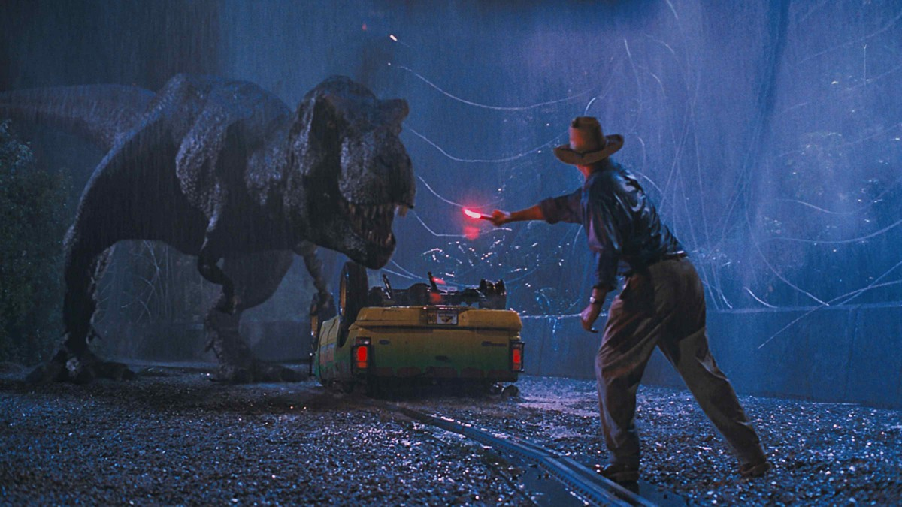
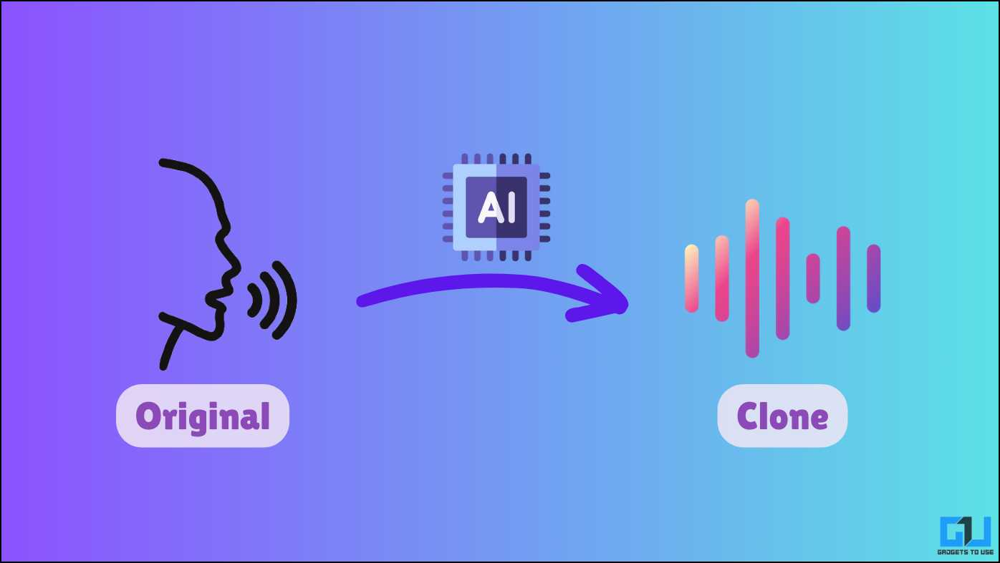

For most of the last hundred years, faking a photo or a voice took skilled labour and time. In the last decade, a series of research breakthroughs and one anonymous Reddit account collapsed that work into a few clicks.1011
The CGI Era. Realistic synthetic media meant a studio. It needed CGI artists, large budgets, and months of frame-by-frame rendering. The barrier to entry was money and skill. So forgery at any quality stayed inside film and television.11

Ian Goodfellow and his co-authors introduced the Generative Adversarial Network (GAN) at NeurIPS.12 The idea was to train two neural networks against each other so that one of them learned to produce data that looked like the real thing. This shifted the burden of "drawing" away from human artists and onto a model that taught itself. The original 2014 paper produced low-resolution images, but the architecture was the seed for almost everything that followed in face synthesis.10
A user on Reddit using the handle "deepfakes" posted face-swap videos that grafted celebrity faces onto adult-film performers. The user also released the code. That second part is what mattered. From that point on, anyone with a consumer GPU could try the same thing.11
After the code was public, the tools got friendlier. Open-source projects let people with no machine learning background train their own face-swap models. Better generators like StyleGAN, published by Karras and colleagues at CVPR in 2019, pushed face quality to near-photographic levels.1314 By 2020, peer-reviewed surveys were already describing deepfakes as a security and policy problem, not just a research toy.10
Voice cloning crossed an important threshold. Earlier systems needed hours of clean studio audio. Newer models, including Microsoft's VALL-E, can clone a voice from about three seconds of audio.4 The training trick is to learn the speaker's "fingerprint" separately from the words being said, so the model can put any new sentence into that voice.15

The friction needed to launch a serious attack is now close to zero. The same family of models that brought a young Luke Skywalker back to The Mandalorian7 also let a small group of attackers stage a $25 million deepfake video conference inside Arup.3 The rest of this report walks through how that happened, where it helps, and what to do about it.